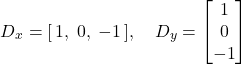

Project 2: Fun with Filters and Frequencies!
Part 1: Fun with Filters
Part 1.1: Convolutions From Scratch!
To start off, I implement my own four and two loop implementation of the scipy.signal.convolve2d, with mode=’same’.
I construct a box filter to do blurring on my image, and the results look qualitatively the same for the two types of loops and the built in functions.
Runtime: scipy.signal.convolve2d is much faster (4.34 seconds), than two for loops, which is also significantly faster than four for loops. Although the second two loops are much smaller, they still require a few operations which probably adds to the longer runtime. For the scipy implementation, I wonder if they are able to use certain optimizations (loop unrolling like we learned about in 61C) to achieve even further optimizations as compared to the two loop filter I implemented.
In terms of boundaries, the way I implemented the convolution matches that as of mode=”same” within scipy. When doing “same” mode, “The output is the same size as in1, centered with respect to the ‘full’ output.”. My code just doesn’t consider values outside of the range of the image (those values just contribute 0 to the total sum), but scipy calculates the full convolution so that the resulting image is larger than im1, then crops. Even though the handling of boundaries in calculation is different, I believe that the final image and boundaries should appear the same in my implementation (which seems to be the case, based on my observations).
I then convolve my image with the finite difference operators D_x and D_y. The hanging lights are much more clear in the D_xas they hang vertically -> there are greater changes when moving horizontally from wall to light back to wall, as well as observing the textures in the map in the upper left. For the D_y image, details like the top of my arm and top of my head are more clear.
Part 1.2: Finite Difference Operator
For part 1.2, we aim to find all the edges in the cameraman image!
First, I convolve the image with the finite difference operators, D_x and D_y.


original image

convolving with dx

convolving with dy
The D_x convolution shows a lot of detail with the vertical lines, like the supports of the camera, the columns in the building. The D_y convolution shows more horizontal details, like the top of the camerman’s head and the tops of buildings.
Next, I compute the gradient magnitude image by taking the square root of the sum of the squared values in the dx and dy image.

gradient magnitude

0.1 threshold
I then experimented with various thresholds to binarize the gradient magnitude image and get an edge image. I settled upon 0.2 as my threshold, trying values from 0.1 to 0.9, incrementing by 0.1 each time. I find that 0.2 strikes the best balance between being too noisy and capturing all of the most important details. For example, the 0.1 threshold image is too noisy and there are artifacts that don’t exist in the original image in the sky and ground. However, the 0.3 threshold is missing some of the important details in the cameraman (arm and hand) and buildings in the background.
Part 1.3: Derivative of Gaussian (DoG) Filter
Now, we aim to get rid of some of the noise by using the Gaussian filter! My Gaussian filter of size 10 and sigma = 10/6
is created by taking the outer product of cv2.getGaussianKernel with itself as suggested.

Gaussian, then D_x

Gaussian, then D_y
By convolving the cameraman image with the Gaussian filter, we get a blurred version of the original image. We then convolve the blurred image with D_x and D_y respectively. The resulting image looks to be a lot smoother than the original! This makes sense because applying the Gaussian filter removes high-frequency components from the image, making it look “smoother”.

gradient magnitude of Gaussian, then D_x/D_y

Gaussian of gradient magnitude
Taking the gradient magnitude of the Gaussian blurred D_x and D_y is the same as taking the Gaussian of the gradient magnitude image! This is due to the “nice” properties of convolutions that we learned about in lecture, including associativity, it is possible to show that these result in the same image! Thus, the order of when the Gaussian is applied to the gradient magnitude does not alter the final image.

0.1 threshold

0.2 threshold

0.3 threshold
I find that using a threshold of 0.05 produces the best edge image--anything larger (0.1 or above) loses a significant amount of detail.
Part 2: Fun with Frequencies!
Part 2.1: Image "Sharpening"
To sharpen our image, or get more high frequencies in our final image, we subtract the blurred version of the image (created with a Gaussian filter) from the original. Then, we can add more high frequencies to our original image to sharpen it. However, we can combine this into a single convolution operation. To create the mask passed into this convolution, I pass in the Gaussian filter, unit impulse function, and sharpening factor. I construct the filter by doing [(1 + sharpening factor) × impulse function - sharpening factor × G]. This effectively gets the high frequencies and amplifies them, by multiplying them by 1 + sharpening factor. This argument sharpening factor is somewhat misleading, it’s technically the sharpening factor + 1 (if I pass in 1, it’s really sharpening by a factor of 2). I repeat this process on the red, blue, and green, then stack them back together.
taken from lecture slides

original
The even sharper Taj seems to look unrealistic. The sharpening of the scaffolding and details on the arch are exaggerated, especially for the distance from which the viewer is at. Additionally, there seems to be a glow around the top of the building, which makes the image look more surreal and less realistic.

final, with factor 2
I experiment with blurring, then sharpening a clear image. Upon quick glance, the image looks alright. But, we lose the detail and the softness in Katie’s fur. Especially if you look above her nose, a lot of the hairs look coarser (they’re white), losing the definition and detail that gives it the soft look in the original image. We cannot reconstruct the details that were lost through the blurring process.
Part 2.2: Hybrid Images
Onto some scary looking hybrid images!! The idea behind creating hybrid images is taking advantage of the different viewing distances of high frequency and low frequencies, so what an image looks like changes as you look closer/further.
I utilized the given image alignment code, with the same parameters for kerel size and sigma as before for the Gaussian filter.
Derek? Or Cat?

Derek

cat
what species is this? Sigma1 = 0.25, sigma2 = 0.9
Do you see me, or my dog Katie?

me, in high frequency
blended image: sigma1 = 0.25, sigma2 = 5
Fourier analysis!

blurry katie!

me

me, in high frequency
Katie's image doesn't have too many strong horizontal and vertical lines. Her fur seems to go in many directions

blended image
Does anyone remember the song pen pineapple apple pen?

pineapple

apple

sigma1=0.3, sigma2=0.5
Smiskis!

hi there
Part 2.3: Gaussian and Laplacian Stacks
I work on creating Gaussian and Laplacian stacks in this part! For the Gaussian stack, I repeatedly apply the Gaussian filter to the image until it gets blurrier and blurrier. For the Laplacian stack, I subtract the images in the Gaussian stack from each other to get specific bands of frequencies. The last layer of the Laplacian stack contains the lowest frequencies and is just taken from the Gaussian stack.
Apple Gaussian stack
Apple Laplacian stack
Orange Gaussian stack
Apple Laplacian stack
Part 2.4: Multiresolution Blending (a.k.a. the oraple!)
Onto image blending! To implement this image blending algorithm, I took inspiration from the given paper and lecture slides. I created a binary mask of half 1s on the entire left half and half 0s on the entire right half, and applied a Gaussian filter to this mask for each level, resulting in greater blend for low frequencies and less intense blend for higher frequencies. For each value in the left image, I multiply by the mask array, and for each value in the right image, I multiply by 1- the value in the mask array. Here are my results with the orapple!
I’ve always wondered what it’s like to swim in a bowl of cereal. This didn’t blend perfectly because the kiddie pool tube is a lot thicker than the cereal bowl, but I tried my best. For this one, I used the given image alignment code, then the same horizontal mask as the previous orapple example.
Lastly, I live out my dreams of becoming a buff Survivor player. I take Jonathan’s upper body and algin it to a picture of me. To create my circular mask, I took my aligned selfie and create a white mask for my face. I was able to align this with the opacity features in google slides. Then, I took a screenshot and loaded this in as a array to create the irregularly shaped mask. At first, I tried using a uniform circular mask, but results weren’t to my satisfaction, so I had to fit it better.
Besides the fact that I look really good buff, the most important thing I learned from this project was
how challenging image editing is! Constructing the irregular mask in 2.4 took me a while and it's still not perfect.
Additionally, this makes me think about the power of generative models to alter or create imaginative images. The fact
that these models can relatively quickly and efficiently generate images is crazy as it would take a lot more time and work
to manually come up with these image modifications.